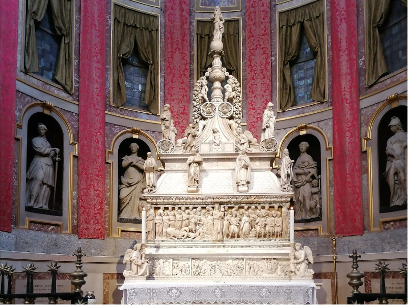

L' Arca di San Domenico Digital
Home
Catalogo
(current)
Esplora
Le sezioni dell'Arca
Linea del tempo
Approfondisci
I servizi fotografici
di A. Villani&figli
Una cosmografia sacra
Cerca
Esplora L'Arca
